一条由北向南、先慢后快的主线
北部承担全程最强的自然与人文层次，胡志明市负责南北气质对照和离境收尾。山区交通和天气是全程最大的弹性变量。
中国 → 河内 → 宁平 → 木江界 → 河内 → 胡志明市 → 中国
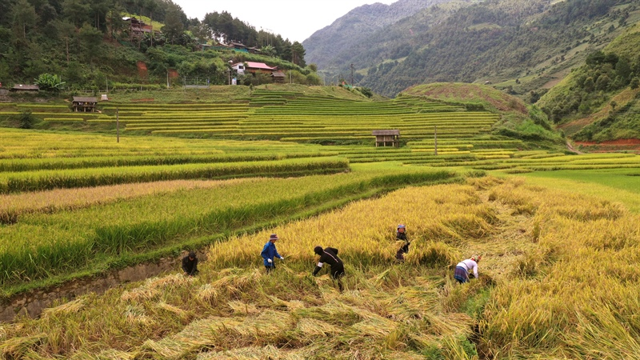
从河内的街巷，到宁平的峰林水道与木江界的秋日梯田，再落脚胡志明市。当前版本确定旅行结构，为后续逐日细化保留弹性。
以河内和胡志明市作为南北两座城市锚点，中段串联喀斯特田园与西北山地。节奏遵循“城市适应—自然深入—城市休整—南部收尾”。
北部承担全程最强的自然与人文层次，胡志明市负责南北气质对照和离境收尾。山区交通和天气是全程最大的弹性变量。
中国 → 河内 → 宁平 → 木江界 → 河内 → 胡志明市 → 中国
本页不锁定各地停留夜数，也不新增未经确认的逐日活动。国际航班、山区交通和住宿确定后，再把骨架拆成逐日版本。
地图聚焦越南境内主线。道路方案尚未确认的段落使用虚线表达，河内至胡志明市按计划中的国内航班表达。
文字路线：河内（1）→ 宁平（2）→ 木江界（3）→ 返回河内（1）→ 胡志明市（4）。中国出发城市及返程城市仍在北京、南京之间比较。
以旅行区段而非虚构的逐日安排呈现。点击目的地名称可直接跳转到对应详情。
中段日期与夜数待航班、山区交通确认| 日期／时间 | 目的地 | 重点项目 | 交通方式 | 饮食与人文 | 天气与装备 | 住宿策略 | 状态／备注 |
|---|---|---|---|---|---|---|---|
| 09-28 | 河内 | 国际抵达、城市适应；老城与湖区作为北部人文起点 | 北京／南京 → 河内，航班方案待比选 | 河粉、烤肉米线、越式咖啡；观察街巷日常 | 湿热、可能降雨；轻便雨具与速干衣物 | 首次入住重步行体验和抵达便利 | 日期固定 |
| 日期待定 | 宁平 | 峰林水道、田园慢行；在长安、三谷等体验间取舍 | 河内 → 宁平，公路或铁路 | 乡野餐馆、区域食材与家常做法 | 湿度与阵雨；防滑鞋、防晒和雨具 | 田园氛围与转场便利二选一或平衡 | 待确认夜数 |
| 日期待定 | 木江界 | 梯田、山谷、垭口与村寨；以当年物候为准 | 宁平 → 木江界；经河内中转或可靠车辆直达 | 山地家常菜、农产品和住宿餐食 | 山地多变、早晚较凉；防雨、防滑与薄保暖层 | 优先道路可达、热水卫生与行李接送 | 交通待确认 |
| 日期待定 | 河内（返回） | 山区返程、休整，为南下航班保留缓冲 | 木江界 → 河内，公路为主 | 补充北部餐饮体验，不安排高强度活动 | 继续按降雨和湿度准备 | 第二次入住重休整与机场衔接 | 需保留缓冲 |
| 日期待定 | 胡志明市 | 历史建筑、市场、街区与现代城市对照 | 河内 → 胡志明市，优先国内航班 | 南部风味、市场小吃、咖啡馆 | 炎热潮湿、阵雨；防晒、驱蚊和补水 | 步行友好、餐饮密集并兼顾机场交通 | 待确认夜数 |
| 10-08 | 胡志明市／离境 | 轻松收尾并返回中国 | 胡志明市 → 北京／南京，航班待比选 | 按航班时刻安排最后一餐与街区活动 | 继续防晒防雨，证件与行李防水收纳 | 前一晚重点考虑机场通勤时间 | 日期固定 |
既是入境后的第一站，也是宁平、木江界等北部线路的交通枢纽。街巷、湖区、老建筑与咖啡文化构成城市的日常底色。
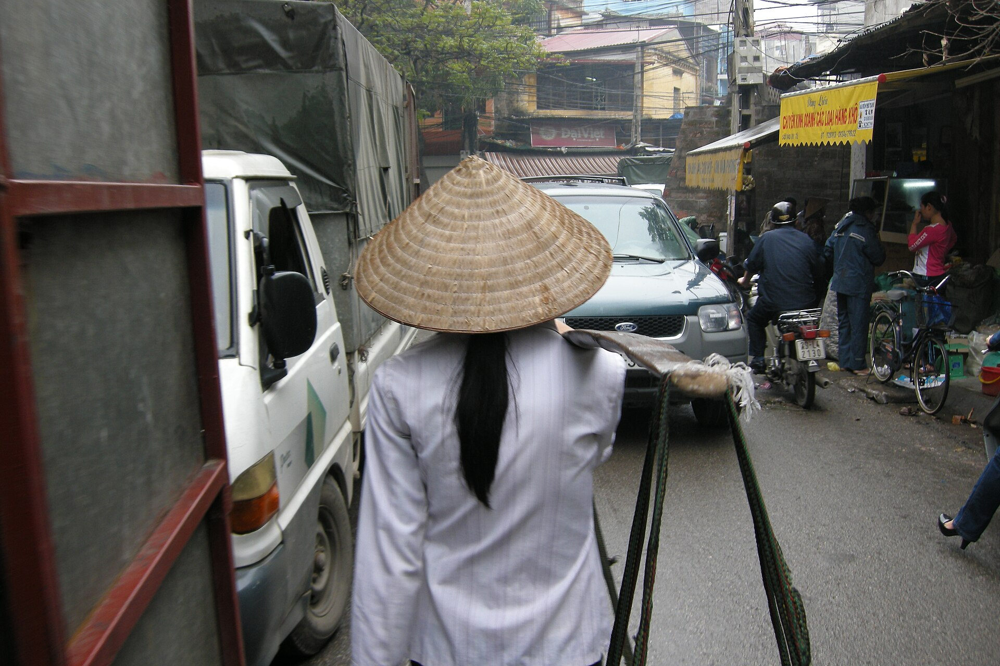
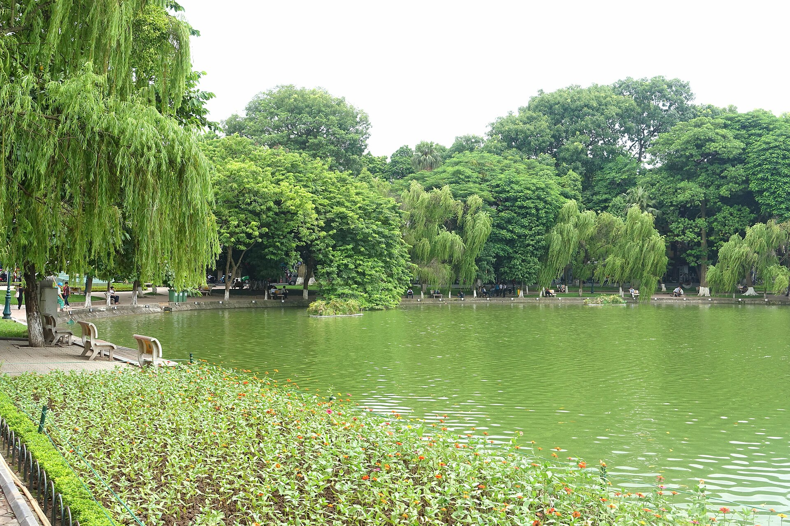
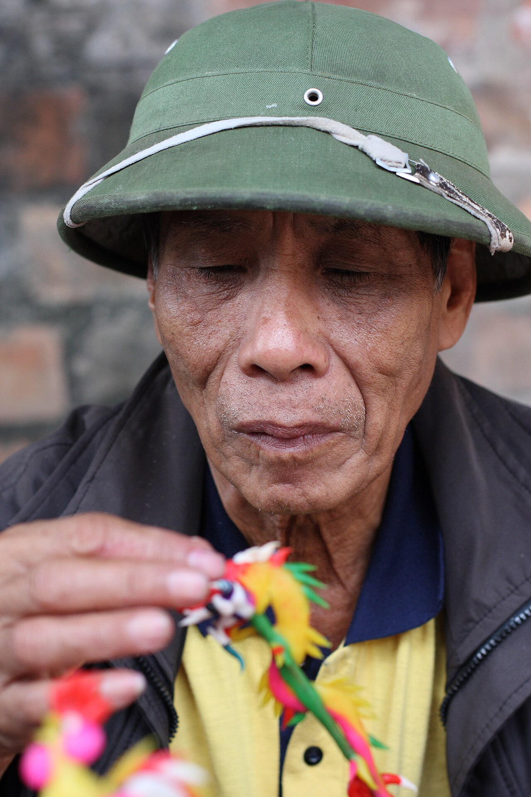
从老城区、湖区与历史建筑切入，理解北部城市的历史层次和日常节奏。河内不是单纯的中转站，而是整条路线的人文基准。
以河粉、烤肉米线、春卷和越式咖啡建立北部味觉基准；街区本身也是体验重点，适合留意居民公共生活和城市节奏。
承担国际抵达、北部集散、山区返程休整和南下航班衔接。首次入住重步行体验，二次返回重休整与机场交通，无需强求同一区域。
首次抵达以适应为主；山区返程后保留缓冲。9 月末仍可能湿热和降雨，准备轻便雨具、速干衣物与舒适步行鞋。
从河内短途进入自然环境：石灰岩峰林、河流湿地、稻田和乡村道路，让行程从城市逐渐松弛下来。
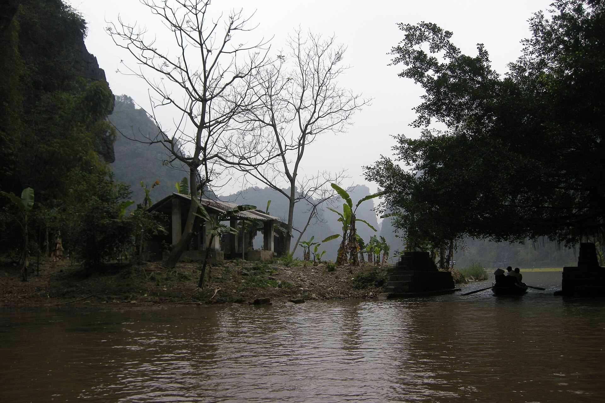
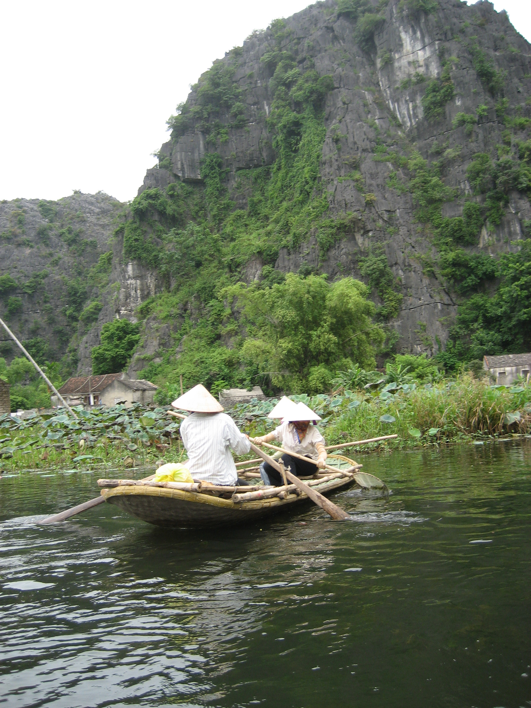
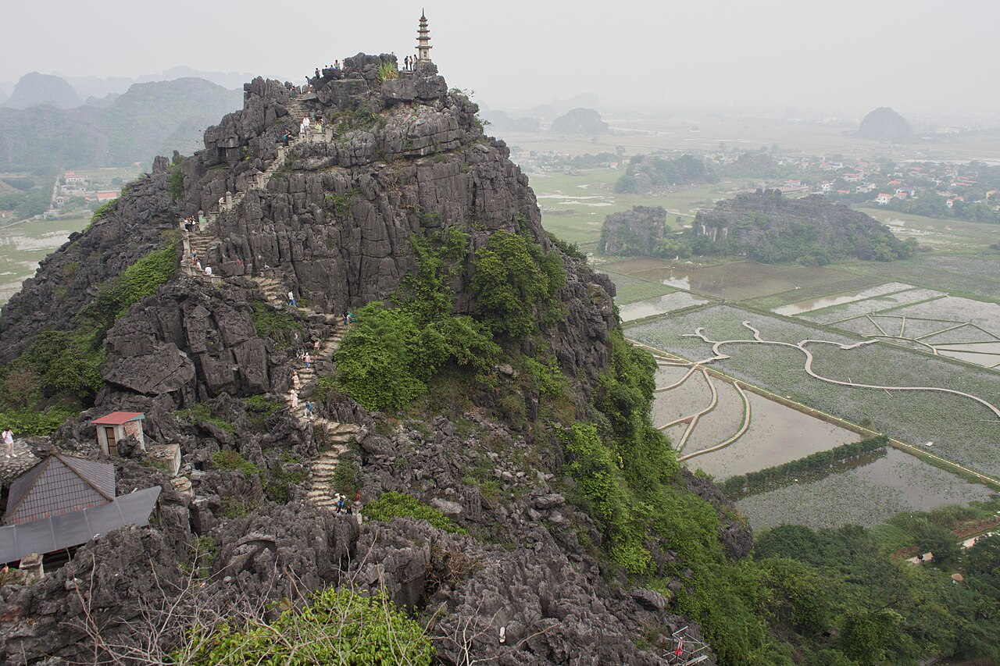
自然与人文空间紧密交叠，河道、峰林、稻田和村落共同构成景观。它承担城市与西北山地之间的过渡，不宜被压缩成匆忙打卡。
适合乘船、骑行或慢节奏探索。具体仍需在长安、三谷及周边人文点之间取舍，当前不锁定逐日活动。
由河内公路或铁路抵达。景区周边更有田园氛围，交通节点更利于早晚转场，应先确定玩法和下一段交通再选住宿。
结合乡野餐馆体验区域食材和家常做法。面对湿度、阵雨和湿滑步道，准备防滑鞋、轻量雨具与防晒用品。
本次北部自然段的高潮。梯田、山谷、公路与村寨共同构成景观，交通耗时和天气不确定性也在这里达到最高。
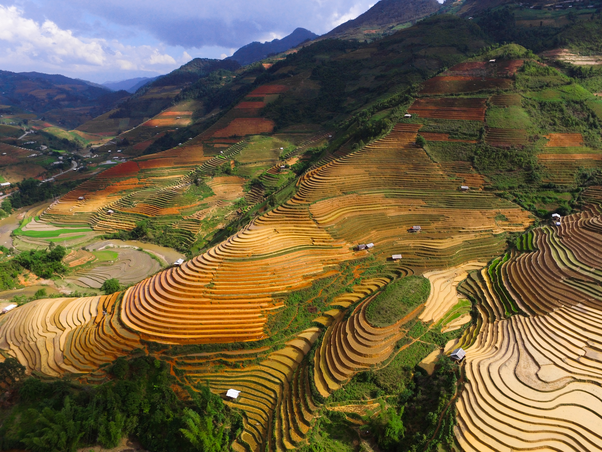
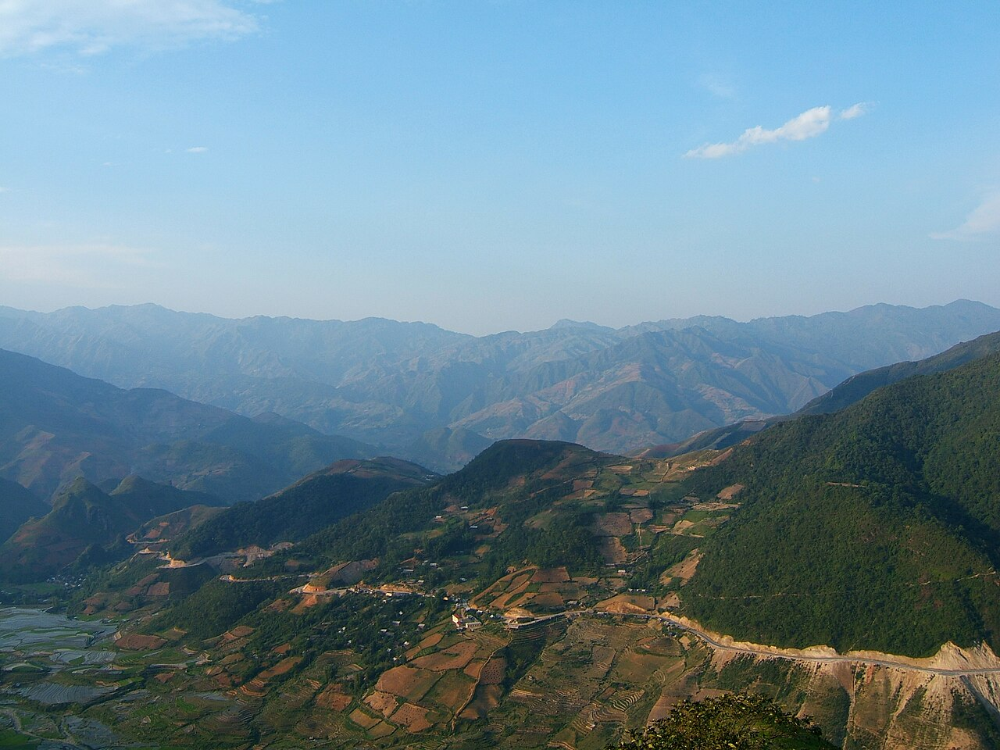
梯田、村寨和山地劳作共同塑造这里的景观。旅行时间接近梯田观赏季，但“金色”并非日历承诺，应以当年水稻成熟和收割信息为准。
垭口、公路、山谷和村落都属于体验的一部分。拍摄人物、住宅或劳作场景前先征得同意，尊重社区日常而非只把村寨当作景观。
宁平至木江界可能经河内中转，也可能在确认可靠车辆后直达。山路安全和司机经验优先；住宿核实道路可达、热水、卫生及行李接送。
以山地家常菜、农产品和住宿餐食为主，转场时准备饮水和少量补给。早晚较凉且天气变化快，携带防雨、防滑与薄保暖层。
从北部历史城市和山地风景切换到更现代、更商业化的南部都市，在离境前完成越南南北气质的对照。
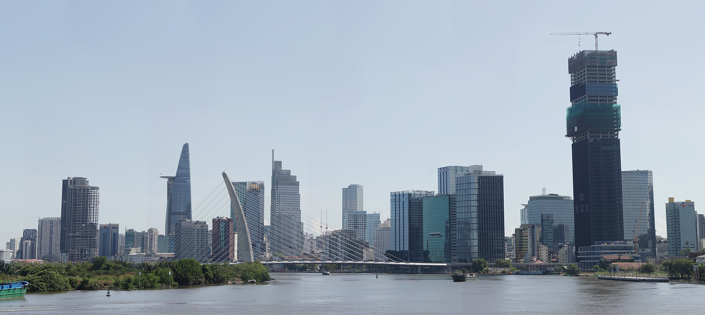
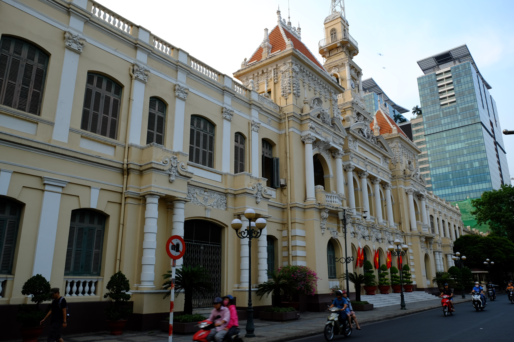
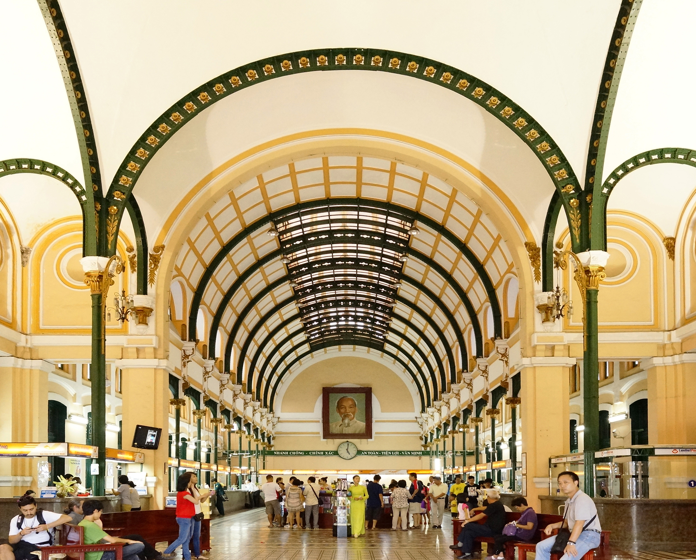
历史建筑、市场、咖啡馆、街区和当代天际线共同呈现城市。节奏比河内更外放，适合作为全程较轻松的收尾。
体验南部风味、市场小吃、咖啡馆和更丰富的城市餐饮场景，让南北口味和城市气质形成对照。
由河内搭乘国内航班南下，并承担国际离境。住宿优先步行友好、餐饮丰富且前往机场顺畅的区域。
以轻松街区活动作为收尾，离境前一晚关注路面交通时间。按照炎热、潮湿和阵雨准备防晒、驱蚊、雨具与补水用品。
先锁定国际进出，再确定越南国内段；把山区的不可控时间与城市航段解耦。
北京与南京均作为可选起点和返程城市，比较总旅行时间、转机次数、行李额度、退改条件与抵达时刻，不强求原路往返。
河内至宁平以公路或铁路为主；宁平至木江界跨区域移动复杂；木江界返河内以公路为主，转场日不叠加重要且不可退款的预订。
河内至胡志明市优先国内航班，以减少长距离陆路占用。木江界返程后先在河内留缓冲，再衔接南下航班。
城市酒店优先可取消；山地住宿较早确认。付款前统一核对房型、早餐、税费、入住时段、行李寄存、取消条款和联系方式。
河内、宁平可能有降雨和较高湿度；木江界早晚通常更凉，山地天气变化明显。
装备：轻便防雨外层、防滑步行鞋、速干衣物与薄保暖层。
按照炎热、潮湿和阵雨环境准备，留意高温与室内空调带来的体感变化。
装备：防晒、驱蚊、折叠雨具、补水用品与防水行李内袋。
临近出发：重新查看短期天气、梯田物候和山路状态，据此调整户外顺序与装备；当前不以远期预报锁定活动。
现阶段只建立成本结构，不填入未经确认的价格。航班、交通方式、人数与住宿档次确定后，再形成总额和每日预算。
| 类别 | 主要内容 | 当前处理方式 |
|---|---|---|
| 国际交通 | 中国—河内、胡志明市—中国 | 比较北京／南京两端的总价与总耗时 |
| 境内交通 | 北部陆路、河内—胡志明市航班 | 山区车辆和国内航班是重点变量 |
| 住宿 | 四地酒店／民宿 | 城市住宿与山地民宿分别估算 |
| 餐饮与活动 | 正餐、咖啡、小吃、游船、景区与文化体验 | 逐日路线确认后加入 |
| 其他 | 市内交通、签证、保险、通信 | 出发前统一确认并留存凭证 |
| 机动金 | 天气、交通变化与临时支出 | 单独保留，不与日常消费混用 |
这些决定会把当前路线骨架变成可预订的逐日版本。在确认前，页面继续保留弹性。
图片存放在页面本地资源目录。交互地图采用 Leaflet 1.9.4，底图数据与图块来自 OpenStreetMap，并在地图中保留署名。
{kind=link}
{kind=link}
.jpg){kind=link}
{kind=link}
{kind=link}
{kind=link}
{kind=link}
.jpg){kind=link}
{kind=link}
{kind=link}
.jpg){kind=link}
{kind=link}